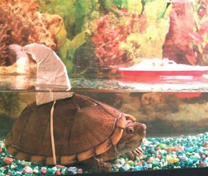

Der nationale “Verkleide-dein-Haustier-Tag”
Meine Meerschweinchen sollen mal froh und dankbar sein, dass sie nicht in den USA leben. Wer weiß, was da mit ihnen heute angestellt würde, denn der 14. Januar ist der National Dress Up Your Pet Day. Habt ihr davon gehört!?
Ich möchte zwar mal unterstellen, dass dieser Tag dort auch weniger Aufmerksamkeit bekommt als Weihnachten und deswegen auch manche Tiere verschont bleiben, trotzdem ist das Internet voll von Fotos verkleideter Tiere, meistens Hunde und Katzen. Und ja verdammt, zum Teil find ichs witizig. Die hier kommen vom großartigen Cute Overload:

Also dann, happy dress up your pet day!
8 Kommentare zu "Der nationale “Verkleide-dein-Haustier-Tag”"
- Externe Links im selben Fenster öffnen
- Externe Links in neuem Fenster öffnen
Basti
OMG ich will dieses Hundekrokodilkostüm... Das ist ja so geil!
TediousNilsen
ich möchte die killerkröte. die könnte man einsA in einem der reptomin-anzeigen unterbringen.
TediousNilsen
und gibs zu, Klausa! du hast dein eigenes schwein in einen fleece-drachen verwandelt. wenn PETA das wüsste.
Herschel Rubinstein
das ist grausam!
…und ich weiß nicht, was ich besser finde: das krokodils-, oder das drachenkostüm?
jasper
die schildkröte, waaaah, wie geil.
danke, Klausa!
Klaus
Wenn die Ideen hier so gut ankommen, können wir ja im Februar ne Karnevalsparty machen, zu der alle ihre verkleideten Haustiere mitbringen...
TediousNilsen
yeah. super sache. der schwarze mini-pudel kriegt nen. äääh. rosa drachen outfit. oder vielleicht teddybär?
naja. nen graues haste nicht. aber eins mit nem grauen fleck auf ddem kopf. also soweit war ich nicht entfernt.
christin
ich finde es bekloppt, schwachsinn! lasst doch endlich die tiere in ruhe!